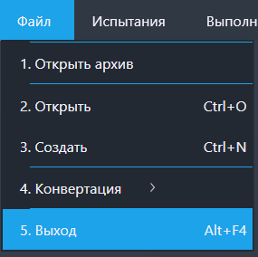

Функция "Выход"
Данная функция предназначена для завершения работы программы.
Путь и вызов
Нахождение в программе
Верхнее меню → "Файл" → "Выход"
Горячие клавишы
Alt + F4На изображении показано нахождение данной функции в программе:

Данная функция предназначена для завершения работы программы.
На изображении показано нахождение данной функции в программе:
